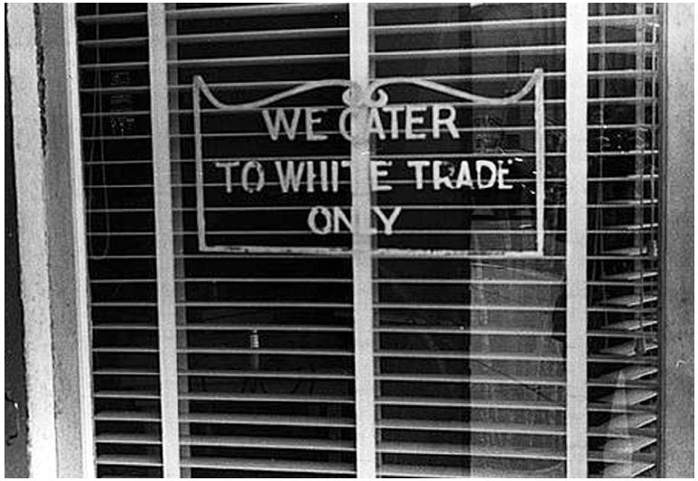
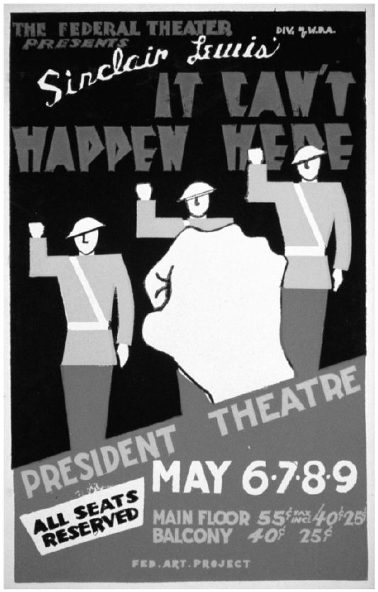
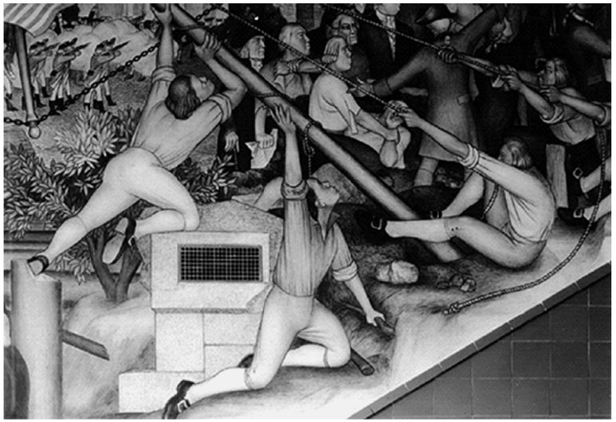

富兰克林·德拉诺·罗斯福在谈话时带有几分轻松自信，他的口音来自生活在哈得孙河流域和长岛地区那些林荫大道两旁石制院墙之内的上流阶层。这个阶层的成员虽然都是土生土长的美国人，却与绝大部分普通美国民众毫无社会交往。罗斯福的祖先早在17世纪就已抵达新阿姆斯特丹，无论政权如何更迭，他的家族从未远离这一区域。事实上，有些政权更迭正是由罗斯福家族推动的。罗斯福的母亲来自一个商人家庭，娘家姓是德拉诺。罗斯福曾就读于格罗顿中学和哈佛大学，两校学生主要是来自富裕家庭的男性白人新教徒。他迎娶了自己的远房表亲埃莉诺·罗斯福（他的妻子在婚后改名为埃莉诺·罗斯福·罗斯福），而他妻子的舅舅正是西奥多·罗斯福总统。追随着老罗斯福总统的脚步，富兰克林·罗斯福先后出任州议员、海军部助理部长和纽约州州长。罗斯福患有成人脊髓灰质炎，这使得他只有在忍受极大痛苦、付出巨大努力后才能在别人的帮助下站立起来。除去疾病的折磨，罗斯福在走向政坛的过程中可谓一帆风顺；事实上，他有幸享受了一个民主国家所能提供的所有优厚条件。
就其背景而言，罗斯福看起来丝毫不像一位平民领袖。当他在1932年对胡佛的赤字财政提出批判时，根本没有试图将自己塑造成平民领袖；此后，他也没有成为平民总统。当时，增加社会开支的政策在美国乃至所有工业化国家都颇有市场，罗斯福所在的民主党通常也支持福利政策，但作为民主党的领袖，罗斯福却反对这些政策。有时，他的财政保守主义毫无成效：例如，虽然他反对储蓄保险并对《全国劳动关系法》漠不关心，但这些政策依然进入了国会表决程序。但另一些时候，罗斯福的保守倾向却深刻地塑造了美国的社会政策，例如在他决定社会保障制度由个人缴费、遵循联邦制结构的时候。虽然罗斯福愿意探索尝试，但他从未彻底摆脱内心深处的保守主义倾向。考虑到这个因素，1936年罗斯福突然变身为保障劳工权益的卫士和高调倡导制衡资本的哲学家，实在有些吊诡。在接受民主党总统候选人提名的那个夏天，罗斯福向那些“新经济王朝的特权领主们”公开宣战，宣称“这些经济复辟分子指责我们准备推翻美国制度，而他们其实是在抱怨我们将夺取他们的特权；正因为忠于美国制度，我们必须剥夺他们的特权” [237] 。罗斯福还进一步表明自己“完全赞同”向特权阶层“勇敢而明确宣战的美国传统”，将那些“为富不仁者”形容为与民族公敌同流合污的“绑匪和强盗” [238] 。
罗斯福的反对者有时会指责他背叛了自己的阶级，但正如历史学家理查德·霍夫施塔特于1948年所评论的，“如果我们认为罗斯福所在阶级的职责是掌管权力和制定政策，那么也可以说是这个阶级背叛了罗斯福” [239] 。尽管罗斯福对建设新政非常上心，尽管他在制定和推行新政的每一项具体措施时都满怀克制与谨慎、尊重美国的联邦主义传统，尽管无法辩驳的言语和行为证据表明罗斯福政府数次拯救了美国的资本主义而无意颠覆这项制度，罗斯福的行动却常遭掣肘、难以得到真心实意的配合。然而，虽然执政阶级将社会秩序的风吹草动都视为社会失序的征兆，罗斯福却克服了他们的敌意，成功地推行了新政，缓解了经济衰退。
尽管民主党依赖于拥护种族隔离政策的白人的选票，尽管罗斯福政府在制定新政政策时特别强调尊重联邦制度与各州权利以避免扰动美国南方的种族政治，新政对于非裔美国人的帮助还是要比胡佛政府更多，也比民主党此前所做的更多。新政倡导帮助那些“被遗忘的人”，使新政的制定者们背负一种羞愧感和历史感，想起美国黑人要比其他任何阶层都更经常遭到主流社会忽视。埃莉诺·罗斯福作为第一夫人，在新政中具有举足轻重的地位。她年轻时曾在一所为纽约市穷苦移民提供帮助的安置房中工作。她对阶级和种族问题的关心，使民权运动领袖能够在白宫中宣扬自己的观点，其中包括全国有色人种协进会的沃尔特·怀特。她还专门向公共事业振兴署署长霍普金斯施压，要求他确保向黑人和白人同时发放救济。 [240] 这些努力并不完全成功。例如，平民保育团就明确反对废除种族隔离。但是，新政仍然在降低黑人失业率方面发挥了空前显著的作用，这是此前一切由任何党派在任何层级上制定的既有政策都没有做到的。 [241]

图8 本·沙恩于1938年为农业安全管理局拍摄了这个位于俄亥俄州兰卡斯特“仅对白人开放”的标志，当时全美有许多这样的标牌
上述改变削弱了美国南方白人的特权意识，有些人把这种威胁看得很重，想要加以纠正。1934年初，一位退休的杜邦公司高管向该公司的另一位高管写信抱怨道：“今年春天我的工地上有五个黑鬼拒绝劳动……他们说政府能给他们提供轻松的工作。”收到信的那位杜邦高管回应道，也许他们应该建立某种组织，“以教育人们什么是通过劳动致富的美德” [242] 。反对新政的美国自由联盟由此建立。罗斯福的一位助手将该组织贬称为“玻璃纸”，原因在于：首先，这个组织和玻璃纸一样，“都是杜邦公司的产品”；其次，该组织出于无党派立场而关心美国宪政的那层包装“一眼就能被看穿”，其最高目标不过是企图在1936年的大选中击败罗斯福。 [243]
一年之后，自由联盟在反对新政方面赢得了一个有价值的盟友：美国最高法院。1935年5月27日，首席大法官查尔斯·埃文斯·休斯宣读了“谢克特诉合众国案”的多数意见。谢克特屠宰场的所有者已被联邦法院定罪，罪名是销售“不合格鸡肉”以及违背全国复兴总署对于家庭产业的有关规定。休斯的观点与多部新政法案序言中体现出的精神截然相反，他认为“特殊情况并不能成为创造或者扩张宪法权利的理由”。最高法院认为，设立有权出台行政法规的全国复兴总署，意味着国会违规将立法权委托给了总统及能够制定行业规则的相关行政机构，尤其是，这样做过于宽泛地解释了国会管制州际贸易的宪法权力。 [244]
当年5月31日，罗斯福举行了新闻发布会。如同《纽约时报》的一位记者所写的，“总统在没有参考手稿的情况下，就一项在他看来重要性仅次于战争的事项发表非正式讲话，这在白宫历史上并无先例” [245] 。在这次新闻发布会上，罗斯福总统朗读了一些恳求他恢复全国复兴总署所颁布的法规的电报，其中一封甚至建议剥夺最高法院对于工业法规的管辖权。然而，罗斯福说：“这些电报都是徒劳的。”他指出最高法院将其裁决建立在对宪法贸易条款的严格解释之上，“可能要比自德雷德·斯科特一案以来的任何裁定都更重要”（该裁定坚持认为联邦政府无权在美国领土上禁止奴隶制，从而引发了南北战争）。在罗斯福看来，尽管在制造业、采矿业、农业和建筑业中，处理原料和生产成品的业务常常跨越各州边界，最高法院的裁定却阻挠了联邦政府对这些行业进行管制。美国是一个依赖州际贸易的国家，而现代交通和通信技术又已将整个国家连接成了一个整体，如此解释法律会使联邦政府软弱无力。罗斯福宣称：“从现在起我们又将变回48个国家……但这不仅异常荒谬，而且毫无可能。”在罗斯福看来，在从前那个州际贸易可以忽略不计、全国人民采用“马拉小车”方式进行迁徙的年代，尚可严格按字面意思解读宪法的贸易条款；但是现在美国人民“已经唇齿相依、不可分割”，因而需要一个能够管理全国事务的政府。“那么，我们下一步将如何应对呢？”罗斯福卖了个关子，说道：“我猜你们希望知道我将采取什么行动，但我什么都不会告诉你们。” [246]
在接下来一年多的时间里，罗斯福也没有对最高法院和新政公开发表任何实质性的评论。甚至当1936年1月最高法院裁定农业调整管理局违宪，并在此后否决了一系列新政措施后，罗斯福也没有过多发表评论。他的对手们却开始大张旗鼓地发表见解。自由联盟的成员们将大法官吹捧为美国道路的捍卫者。罗斯福的政敌开始宣称，即将到来的总统选举关键就在于最高法院。来自佐治亚州的保守派民主党人尤金·塔尔梅奇问美国选民，他们是否希望“由一帮共产主义者……去任命新人”接替年迈的大法官们。共和党人则说，当罗斯福发表“马拉小车”评论的时候，他已经逾越了美国文明的传统；共和党总统候选人、堪萨斯州州长阿尔夫·兰登则声称，罗斯福已经“垮掉了” [247] 。密歇根州的共和党参议员阿瑟·范登堡假惺惺地字斟句酌道：“我不认为总统有任何效仿墨索里尼、希特勒或者斯大林的念头，但我从他嘴里听到的发言却和那些人所说的东西并无二致。” [248]
虽然罗斯福所言甚少，他的行政团队以及他在国会中的同盟却并未停歇。他们通过了《瓦格纳法》，重新确立并且进一步强化了《国家工业复兴法》中所规定的关于劳动者组织工会的权利。鉴于沥青煤炭行业跨州运作的实际情况，国会还通过了《古费煤炭法》，专门为该行业创建了一个微缩版的全国复兴总署。 [249]
最高法院则紧追新政制定者的脚步，于1936年5月宣布《古费煤炭法》无效。而在此前后大约一年的时间中，最高法院做出了一系列与新政对立的判决。时任哈佛大学法学教授的费利克斯·法兰克福特愤怒地写道：“这些判决书似乎无视所有的历史与先例，毫无理智可言。” [250] 并不只有哈佛教授们才对最高法院的判决感到震惊。总统本人就收到了来自选民的大量抱怨，其中一位得克萨斯居民写道：“我跟您说，富人们总是跑到最高法院去攻击咱们自己的法律。” [251]
最终，最高法院越过联邦议员给各州设置了一个路障。在“莫尔黑德诉纽约州案”中，最高法院裁定各州不能为女工设定最低工资。罗斯福委婉地评论道：“现在看来一切都已明了……联邦和各州政府无法正常开展工作的‘治外之地’又被更加清晰地界定了出来。在这片治外之地上，州政府无法有所作为，而联邦政府也无法有所作为。” [252] 一些共和党人意识到，上述裁决之后，他们再也无法通过为最高法院辩护来赢得选票了。来自纽约州的共和党众议员汉密尔顿·菲什说：“我告诉我的共和党朋友们，如果你对这个裁决抱有或表现出任何认同情绪……就意味着民主党将额外赢得一百万张选票。”赫伯特·胡佛说：“应该采取行动把各州认为自己已经掌握的权力交还给它们。” [253]
然而，共和党人这时已经如此彻底地与最高法院站在一起反对罗斯福，改弦更张并非易事。在共和党全国大会上，胡佛坚称“美国应为拥有宪法和最高法院而感谢全能的上帝”，并因此赢得了长达两分钟的掌声。 [254] 在《纽约时报》上，阿瑟·克罗克写道：“最高法院知道自己将接受审判。” [255] 若果真如此，那么最高法院也是自作自受，而共和党人更是主动将自己送上了被告席。相反，罗斯福对司法进程几乎完全保持沉默，与之无甚关联。从这个意义上说，1936年总统大选不仅是对新政这个具体政策项目成功与否的全民公决，更是对最高法院的全民公决，也是对是否允许政府代表劳工阶级与贫困大众行使权力的全民公决。当罗斯福的对手们站在最高法院的立场上反对新政时，他却以新政作为应对大萧条的手段。1936年10月31日，罗斯福在麦迪逊广场花园说道：“今晚，我在这里点名。这本荣誉册上列出了诸多在1932年大选中支持我们、如今仍然与我们同在的公民们。荣誉册上所记载的姓名，属于成百上千万从未能够被机遇垂青的人们，包括领取微薄薪水的男人、在血汗工厂中谋生的女人，以及在织布机旁劳作的孩子。”罗斯福还指出：
选民们对此表示赞同。除缅因州和佛蒙特州外，其余各州都投票支持罗斯福。自1820年詹姆斯·门罗在几乎未遭反对的情况下当选总统以来，还没有哪位总统在选举团中获得如此之大的绝对优势。罗斯福还赢得了比其他任何候选人都多的直接选票（得票率高达60%以上），成为自1824年有记录以来最受欢迎的总统竞选人。 [257] 不仅如此，他还史无前例地获得了大多数美国黑人和犹太选民的支持。最重要的是，工人阶级深信罗斯福会站在他们这边，响应罗斯福号召前往投票站的工人选民人数，创造了历史纪录。民意调查显示，中产阶级选民比富裕阶级选民更可能投票支持罗斯福，而工人阶级选民又比中产阶级选民更可能投票支持罗斯福。即使在工人阶级内部，这种趋势依然显而易见：相对于劳动技能更高的工人，技能水平更低的工人更有可能支持总统。美国人民对他们总统的立场有着清醒的认识。就像一封给罗斯福的信中所写的，“你是有史以来唯一一位帮助工人阶级的总统” [258] 。同时，美国境内那些曾经试图挑战罗斯福、反对他成为中产阶级和工人阶级领袖的声音也沉寂了下来。休伊·朗在一年前被谋杀。查尔斯·库格林神父——那位擅长利用广播的牧师——所领导的第三党以失败告终，不仅因政治观点受到天主教会斥责，而且由于他日益增长的反犹太倾向而失去了听众。甚至连美国共产党都避免批评罗斯福。 [259]
罗斯福在全国范围内所赢得的多数优势令人惊叹，这一优势持续了约30年时间；但是，早在罗斯福赢得民心、大获全胜之时，导致其支持者阵营分崩离析的裂痕就已显露出了端倪。罗斯福支持者所组成的这个共同体，其政治纲领的原则是利用联邦政府来帮助工人阶级、少数族裔和美国黑人。这样一个共同体的支持者，几乎全部来自美国的城市。在总统选举中，这样的共同体或许很容易获胜，因为人口稠密的州拥有更多选票，而这些选票又集中在人口稠密的城市选民手中。然而，美国国会的结构，特别是参议院的结构，却会抵制这种依赖特定阶级和城市选民的政治，这在很大程度上也正是18世纪制宪者们的初衷所在。随着总统日益直白地宣称自己是这个国家受压迫者的卫士，农村地区、由小城镇构成的地区，以及那些在种族主义政治道路上一意孤行的南方白人地区，对罗斯福政府的敌意也与日俱增。罗斯福凭借对新政更加明确的定位成功连任美国总统，但他也暴露出了新政和民主党之间所存在的差别。 [260]
在第二个任期的头一年里，罗斯福以一种他本不会选择的方式澄清新政与民主党之间的这种差别，也因此遭遇了他的第一个政治滑铁卢。1936年，尽管罗斯福本人对最高法院的所作所为保持了沉默，司法改革的倡导者们却时常就变换最高法院的人员构成发表看法。他们援引美国内战结束后重建时期的情况作为先例：当时，共和党控制的国会剥夺了最高法院对一些案件的司法管辖权，并调整了大法官的数量。罗斯福总统的一名顾问发现，大法官詹姆斯·麦克雷诺兹在最高法院里是新政的仇敌，而此人于1913年被伍德罗·威尔逊总统任命为司法部长时，曾提议对联邦司法制度进行改革，要求如果在任大法官年满70周岁还不退休，那么联邦政府就有权任命一位新的大法官。如今，最高法院里最反对新政的四位大法官都已年过七旬，而且整个最高法院中也没有一位年龄小于60岁的大法官。罗斯福决定依照麦克雷诺兹之前的提议增加大法官的数量，他的反对者们则公开指责该举措是往最高法院“塞人”，而他的支持者们私下里也这么说。 [261]
远在罗斯福总统决定实施“塞人”计划之前，最高法院就已对此做出了明显的反应。1936年12月，在大选结束之后、就职典礼之前，大法官欧文·罗伯茨一改此前对新政的反对态度，不再附和其他四位反对新政的大法官。在一个关于新政政策的案子中，他的倒戈让最高法院中支持新政的一方占了多数。几乎所有的观察家都认为，这意味着最高法院对新政的态度不言而喻地转向了。直到1937年3月，最高法院才宣布了其对“西海岸酒店公司诉帕里什案”的审判意见，但在这份意见中，大法官们的说法却与他们此前在“莫尔黑德诉纽约州案”中的说法相反——这次，最高法院判定各州有权立法对最低工资做出规定。 [262] 不久，他们裁定《瓦格纳法》和《社会保障法》合宪，而在此之后，他们似乎对新政的各个方面都表现出了更加友善的态度。
然而，罗斯福还是在推进他为最高法院换血的计划。支持者们宣称该计划有着显而易见的好处：毕竟，共和党人在重建时期就曾往最高法院里“填塞”过人；西奥多·罗斯福在就任总统期间和卸任后也有类似的主张；富兰克林·罗斯福入主白宫时，联邦法官中只有不到30%的民主党人，且在第一个总统任期内他甚至没能任命一名最高法院大法官；而“莫尔黑德诉纽约州案”的裁决，更是对时代和传统的倒行逆施，几乎让所有人都惊愕不已。 [263] 然而，对于罗斯福的反对者而言，“填塞”最高法院的计划为他们抨击罗斯福的独裁野心提供了绝好的机会。在那个某些发达国家确实被独裁者控制的动荡时代，对罗斯福的这种担心特别具有影响力。参议院司法委员会发表报告，否决了总统的计划，认为“放弃宪法原则是不必要的、徒劳的、极端危险的”，而该计划让他们想起了其他国家政治体系此前所遭受的不幸。报告的十位署名者中，有七位是民主党人。正如一位记者所写的，该报告看起来像是民主党保守派的“决裂书” [264] 。
随着夏意渐深，最高法院表现得更加愿意和解，罗斯福向最高法院“塞人”的《司法重组议案》看起来越来越没有必要。最终，该议案在死亡的阴影笼罩下走向失败。来自阿肯色州的参议院民主党领袖约瑟夫·T.鲁宾逊在力推议案的过程中身故，总统收到了来自武装反对者的死亡威胁，而国会对联邦政府的支持也逐渐消退。 [265]
在围绕最高法院那场旷日持久的斗争和民主党内部的分裂之外，还有一个更大的困难削弱了新政的成效。自罗斯福当选总统以来，国家首次陷入了经济衰退，衰退速度之快让人感到头晕目眩，这危及了新政所宣称的成功。这次衰退不像是商业周期中的普通回潮，因为美国经济显然尚未完全从1929年的崩溃中恢复过来。政府的批评者们把经济衰退归咎于罗斯福。他们说，罗斯福使实业家们因为担心而紧握资本，从而无法进行生产性投资；他们还指责于1937年生效的社会保障税，因为这减少了经济中的资金量。在政府内部，新政的推行者们则指责实业家们刻意拒绝投资——通过启动所谓的“资本罢工”来诋毁新政；新政的推行者们也对罗斯福提出了指责：他们认为罗斯福的财政保守主义做派又死灰复燃——为平衡预算，他下令削减了公共工程支出。 [266] 随着新政支出的下降，失业率出现了上升。 [267]
在一封于1938年2月1日写给总统的私人信函中，约翰·梅纳德·凯恩斯认为，罗斯福应该表现出虚心接受所有批评的样子。凯恩斯说道，削减救济支出“犯了过分乐观的错误”，而恢复公共工程支出将有助于扭转颓势。与此同时，凯恩斯指出，美国需要私营企业来帮助自己解决问题：“如果你不把它们（包括那些大型企业）当作豺狼虎豹，而是视为在本质上能够被驯养的动物，你就可以和它们一起做任何你所喜欢的事情，即使它们已经被用糟糕的方式养大，也没有接受过你所希望的训练……被驯养的动物得不到合适的照顾，就可能陷入暴戾、顽固、不安的情绪，如果你使私营企业陷入这种情绪，就无法让市场分担国家所背负的压力。”因此，罗斯福在恢复经济的努力中，需要再次借用实业家们的力量。凯恩斯的建议在这个时候具有额外的分量，因为他在1936年出版了《就业、利息和货币通论》，此书与当时出现的经济衰退一道，使美国经济学家们相信：通过让消费者购买更多东西，政府的财政赤字支出能够使经济从衰退中复苏。 [268]
罗斯福的行动似乎表现出他对于凯恩斯的说法信甚于疑。1938年春，罗斯福承认公共工程支出在1937年“开始呈现出过快收紧的趋势”，要求恢复公共工程支出的规模。 [269] 6月，美国国会施以援手，划拨约30亿美元用于重新启动救济支出，大幅提升了联邦政府在经济中的作用。 [270] 但此时围绕最高法院的斗争和经济衰退已经削弱了罗斯福的力量。除增加救济支出外，罗斯福还促使国会通过了《公平劳动标准法》，该法案规定禁止童工，并设定了联邦最低工资。 [271] 但是，罗斯福之所以能让该法案获得通过，在很大程度上受益于全国消费者联盟和一些主要工会所开展的长期动员。 [272] 在此之后，新政的推行者们再也没能促成任何具有重大意义的新法案。
罗斯福此时则对反对势力的两大来源展开了攻势。一方面，他打击实业组织，并为此部署了临时国民经济委员会以揭露诸多垄断者的不义之举。另一方面，他以个人名义针对保守的南方民主党人发起了政治攻势。两种努力都以失败告终。临时国民经济委员会对各个行业展开了听证，并考虑了各种方案来终结垄断，或至少想对垄断加以规范。虽然该委员会发现并及时报告了大量美国产业数据，却没有针对控制美国企业的信托机构和控股公司提出明确的行动方案。不过，临时国民经济委员会确实强调政府必须扮演凯恩斯所指定的那种角色，即通过旨在刺激消费者购买行为的公共支出来促进经济繁荣。 [273]
罗斯福本人则以更加传统的党争手段处理经济问题，他把美国南部确定为“全国第一大经济问题”，并将此作为民主党的头号政治问题：“我认为南部各州将继续支持民主党。但是，在我看来，要想争取南部各州的支持，不能重走民主党阵营多年以来坚持的老路，而要在这个地区建立起一种设计得更巧妙的民主形式——一种自由的民主制度。” [274] 整个1938年夏季，罗斯福都在与南部各州的民主党当权派作斗争，却未能得胜。面对攻势，罗斯福的对手们激起了自美国内战以来南方白人心中一直存在的恐惧：他们害怕北方煽动者前来横加干预。在11月的国会选举中，美国选民普遍流露出对总统的幻灭，以致民主党代表团在众议院中丢失了72个席位、在参议院中丢失了7个席位。 [275] 事实证明，罗斯福的预测并不准确。南部各州不会转而奉行自由，而如果民主党坚持要改变这个地区的种族关系，那么他们甚至会放弃对民主党的支持：不到十年间，罗斯福的继任者哈里·杜鲁门因支持美国黑人争取民权的事业而使民主党在美国南部遭到猛烈抨击，以至于险些输掉大选。
从1936年的高潮到1938年的低谷，罗斯福展示了新政在哪些方面能够影响美国政治，又在哪些方面无法改变美国政治。在覆盖全国人口的总统大选中，罗斯福可以成功地将自己包装为人民的斗士，在富人和旧势力的卫道士面前捍卫新政。他也可以借助阶级政治的话语和阶级不平等的现实来赢得连任。但是，美国的法律和传统都没有为全国性的政治组织提供舞台。面对一个由各地选举产生的众议院，以及一个由各州选举产生的参议院，罗斯福的跨区域政治策略失败了。1938年，总统收到的邮件清楚地表明了美国社会中不同群体之间的分歧。有些来信充满溢美之词，正如一位妇女问道：“怎么会有人反对你？！通过公共事业振兴署，您已让这么多父母和孩子避免家破人亡。”其他来信则流露出明显的不满情绪。一位妇女说道：“一想到你的执政计划里没有任何新东西，只是一些已经推行了五年的陈规旧制，我就从心里感到恶心。把它们拿给那些愿意接受的人吧。”一个男人则问道：“你究竟有没有想过，在你之前这个国家是如何运行的，在你离任后她又将何去何从？” [276]
同样可以公平地说，除医疗保险外，罗斯福还与国会携手，构建了美国社会保障制度的主要组成部分，受惠对象包括老年人、失业者、残疾人和其他无法完全自立的社会成员；美国的社会保障项目与其他工业国家业已存在的类似制度在本质上并无二致。罗斯福和国会提振了银行和货币的活力，并出于他们的信仰拯救了美国的资本主义。他们还启动了开发南部和西部欠发达地区的进程。诚然，一些目标未能实现，例如他们未能把田纳西河流域管理局的运作模式拓展至其他地区。 [277] 而民主党人也已发现，在争取美国所亟需的黑人公民权利方面只是稍有动作，就要面临政治风险。
1930年代后期，那些带着彻底变革国家运转方式的雄心来到华盛顿的政策制定者们，却发现自己越来越多地被要求找到改进美国既有经济结构运作方式的道路。像全国资源计划委员会这样的机构不信任结构性的变革，而希望政府采取措施改善现有制度。 [278] 国会对已实施的方案修修补补，在不得罪最高法院的情况下，重建了农业调整管理局，保留了旨在促进社会平等的政策，并且调整了社会保障制度。新政推行者们对“凯恩斯主义”政策的接受度越来越高——该政策旨在通过增加联邦预算来鼓励美国人消费，从而在不插手市场基本运作和不破坏经济平衡的情况下实现整体经济增长。
不过，尽管新政在立法层面的创新阶段即将结束，那些在立法过程的冲突与妥协中被提炼出的新政理念，却才刚刚开始生根发芽。这个理念非常简单，正如一位接受公共事业振兴署以工代赈救济的人士在1938年所说的：
这段话所反映的理念来自新政。这种理念认为，帮助那些可能看起来未必值得救济的穷人，并不会伤害一个富裕的国家。以这个标准来看，上面的话本身也不会对富裕的美国带来伤害，而这个富裕国家更有必要记录并保存这段话，尽管它只是一个普通人的平凡言语。
这段话之所以能够存留至今，是因为公共事业振兴署将它与其他许多美国人的思考一并保留了下来。公共事业振兴署的联邦作家计划与其他数个类似的项目一道，派作家到全国各地去记录美国人的言行——不仅记录人们对新政、对大萧条或对总统的观点，也记录他们的方方面面、点点滴滴，记录他们的生活、希望、抱负以及毫无理由的烦躁。这些工作并不是要为新政或者美国高唱赞歌，而只是要为美国文化和美国人民留存一份记录。作家们竭尽所能地细心工作，严格遵循“记录报告人原话” [280] 的指示，记录下美国人是如何说话、歌唱、工作和娱乐的。他们的同事用相机记录下人民和国家的面貌。他们采访了当时的佃农和昔日的奴隶：“被鞭打后，我在床板上躺了两天，养好了身上的伤口，却无法抚平心头的创伤。不，先生，我的心至今还布满伤痕。” [281] 他们找到了开拓定居的先驱，也找到了那些对拓荒者的到来还留有印象的印第安人。他们记录下了荒诞不经的传说、关于妖魔鬼怪的故事以及富有民俗风情的歌谣，这些东西属于美国那已成往事的乡村生活，它们在新近发生的、以城市为中心的民族整合过程中烟消云散。这些作品都被结集发表，包括出版于1938年的《纽约犹太移民同乡会》和《美国一号国道：从缅因州到佛罗里达州》、出版于1940年的《弗吉尼亚州黑鬼》和《哈瓦苏派印第安人与霍拉派印第安人》，以及其他数十部对各州、各民族和各种景观风貌进行介绍的书籍。
通过联邦艺术项目和联邦剧场项目，公共事业振兴署也为美国创造了新的文化。联邦艺术项目制作了具有鲜明视觉风格的壁画和海报，联邦剧场项目则确保美国人不仅能在纽约，也能在全国各大城市观看到各种剧目，包括《麦克白》《浮士德博士》《日本天皇》以及根据辛克莱·刘易斯的小说《不会发生在这里》改编的作品——这部小说对美国可能滑向法西斯主义敲响了警钟。
新政在文化方面的抱负与其在政治方面的诉求一样，因为受到同一批反对者的阻挠而惨遭失败。像得克萨斯州众议员马丁·戴斯这样保守的——特别是来自南方的——民主党人，开始公开表示对新政受共产主义影响的担心。戴斯的非美活动调查委员会在1938年展开了一系列的听证会，广泛调查共产主义对工会和新政的影响，联邦剧场项目也在被调查之列。当年12月，该项目主任哈莉·弗拉纳根接受了非美活动委员会的质询。当她提到克里斯托弗·马洛——《浮士德博士》一剧的作者时，众议员约瑟夫·斯塔恩斯问道：“你所援引的这个叫马洛的家伙，他是个共产党员吗？”弗拉纳根答道：“请把我要说的记录下来……此人是莎士比亚时期最伟大的剧作家，如果说有谁比莎士比亚还伟大，那就是他。” [282] 上述对话反映出新政推行者们所宣扬的文化，与美国某些被要求接受新政的地区所固有的文化之间，存在着多么宽的鸿沟。到1939年，国会中的保守派已在戴斯委员会的帮助下终结了对联邦剧场项目的资助，于是他们把注意力转向了其他新政机构。1939年夏天，他们开始深入调查全国劳资关系委员会；与此同时，保守派民主党人和共和党人在投票时联手，否决了罗斯福提出的资助全国劳资关系委员会的财政方案。 [283]

图9 联邦剧场项目海报：辛克莱·刘易斯的小说《不会发生在这里》被搬上舞台
受到保守派反对者的阻挠，罗斯福开始考虑对新政作个了结。罗斯福的一名顾问说，总统曾在1940年告诉他：“对于美国国内的问题，他可能已经竭尽所能了。”欧洲的战事引起了罗斯福的注意。尽管罗斯福会对新政的其他推行者们说“我们必须开始打赢这场战争”，但他却并没有完全抛弃新政，甚至在美国卷入战争时依然如此。 [284]

图10 这幅位于旧金山乔治·华盛顿高中的壁画是公共事业振兴署联邦艺术项目的产物，它描绘了美国革命的一幅场景